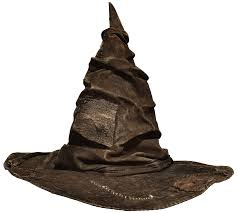

The Sorting Hat as seen on the queue for the theme park attraction, Harry Potter and the Forbidden Journey. The Sorting Hat is a sapient artefact used at Hogwarts, which uses Legilimency (essentially, the ability to read minds) to determine which of the four school houses – Gryffindor, Hufflepuff, Ravenclaw or Slytherin – each new student is to be assigned for their years at Hogwarts. The hat resembles a dilapidated conical leather wide-brimmed wizard's hat, with folds and tears that make it appear to have eyes and a mouth. During the opening banquet at the beginning of each school year, the Hat is placed on every first-year student's head. The Hat announces its choice aloud, and the student joins the selected house. The Hat speaks to the student while they're being sorted and is willing to take the s tudent's preferences into account when it makes its decision. Sometimes it does not have the need to do so: for instance, the Hat barely touched Draco Malfoy's head before sending him to Slytherin. The Sorting Hat had a difficult time placing Harry, almost placing him into Slytherin house before he requested specifically and emphatically not to be. The Hat instead p laced him into Gryffindor, the house of his parents. Rowling has stated the reason for the Hat's indecision as to which house to place him into was because it sensed the part of Voldemort's soul within Harry.
